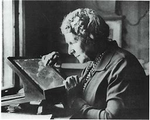

Cambiaron el rumbo de la ciencia, la tecnologia y el arte.
Sus huellas estan en todo lo que nos rodea.
Pero sus nombres fueron borrados.
Hoy volvemos a escribirlos.
Sister Roseta Tharper
Pionera del rock and roll, influyó
enormemente en el género musical y fué reconocida por su
estilo de guitarra ysu voz gospel.
Alice Guy-Blaché
Considerada la primera mujer cineasta,
se encuentra entre los primeros creadores flimicos de usar técnicas
de narración, edición, close-ups, sonido sincronizado, efectos especiales
y coloreado de pelicula a mano. Su obra no sólo fué revolucionaria en un
sentido técnico sino también temático.
Fátima al-Fhiri
Poseedora de una gran visión de futuro, fundó la
primera universidad del mundo, la Universidad de Qarawiyyin y su biblioteca
en el año 859, representando la adquisición y la creación del conocimiento.
Annie Jump Cannon

Inventó el Sistema de clasificación de Harvard y catalogó
miles de estrellas, siendo una pionera en la astronomia.